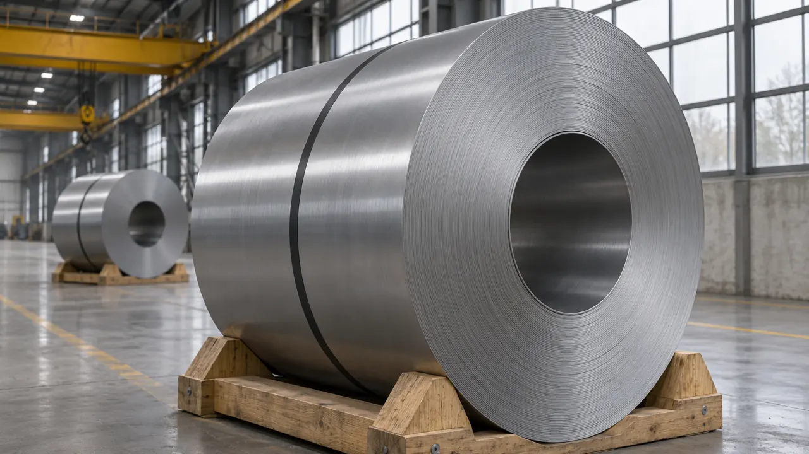

A Belgian appliance maker needs forty tonnes of cold-rolled strip for refrigerator panels. Two offers arrive from the same Istanbul merchant at the same price. One names the rolling mill. The other promises Turkish origin and leaves the producer to be selected after payment of the deposit. That difference can change the duty payable at the EU border. On a qualifying consignment with a frontier value of EUR 100,000, the difference between the lowest Turkish producer rate and the residual rate is EUR 4,800.
Commission Implementing Regulation (EU) 2026/2547 introduced definitive anti-dumping duties on certain cold-rolled flat steel from Türkiye and four other origins. The Commission adopted the measure on 13 November 2026, published it in the Official Journal on 16 November and brought it into force on 17 November under Article 3. Its announcement on publication day gives the Turkish range as 3% to 7.8%. A buyer needs the applicable row, the physical specification and the invoice that supports that row before it can turn the range into a reliable landed cost. Implementing Regulation (EU) 2026/2547, Articles 1–3 and the producer annex European Commission announcement on cold-rolled flat steel duties, 16 November 2026
Decide whether the steel falls inside Article 1
Start with the material actually offered. Article 1 covers specified cold-reduced flat products across widths, including certain alloy steels, provided they meet the conditions on processing and surface treatment. Stainless steel falls outside this description. Cladding, plating, coating or further working can change the answer. The text also excludes defined electrical products, certain thin annealed coils known as black plates, silicon-electrical steel and high-speed steel meeting the stated conditions. Use the full description alongside the commodity codes. An entry prefixed with “ex” covers only part of that tariff heading.
Ask the technical buyer for the drawing, grade designation, nominal thickness, tolerance, width and ordered finish. Ask the mill which operations it performs before dispatch. A purchasing catalogue may group a bare strip, an electrolytically coated version and a painted sheet under the same family because they fit the same press. Customs needs the properties of each imported item. Keep engineering revisions next to the classification decision, especially when a coating is added for corrosion resistance or a substitute alloy offers better formability.
Take the black-plate exclusion. A service centre offers a coil described simply as thin annealed sheet. The exclusion has multiple elements, including material, thickness below 0.35 millimetres, presentation in coils and the stated processing conditions. A measurement of exactly 0.35 fails the strict thickness limb. Size alone tells the broker little about the remaining requirements. Obtain the mill specification and actual production evidence for the shipment. If the order permits a tolerance straddling the boundary, have the technical and customs teams resolve how the delivered material will be identified before committing to a price built around exclusion.
Match the mill to the rate and additional code
For covered goods of Turkish origin, Article 1 lists Tatmetal Çelik Sanayi ve Ticaret at 3.0% under additional code 88GJ. Borçelik Çelik Sanayi Ticaret carries 7.8% under 88GI. Other cooperating producers specifically named in the annex carry 4.9% with their respective identifiers. The residual line for other Turkish imports carries 7.8% under 8999. Although two of these percentages coincide, the declaration should still identify the correct category. Copy the complete legal name and code from the operative text when preparing instructions.
For instance, the annex assigns 88GL to Atakaş and 88GN to Gazi Metal. An industrial group may share a brand, central switchboard, email domain and sales team across several legal entities. A merchant may buy genuine first-quality coils from several unrelated manufacturers. Request the producer named on the inspection certificate and link that identity to each coil number. If a supplier says a sister company always uses the same rate, ask which published entry covers the actual producer. Leave the calculation provisional until someone can show it.
A new Turkish exporter can ask to be added under Article 2 if it can substantiate all the conditions. Those concern exports during the investigation period from July 2024 through June 2025, relationships with businesses covered by the measure, and actual subsequent exports or an irrevocable commitment for a significant quantity. A first purchase order from a European customer establishes little on its own. The buyer needs to see the governing measure amended before budgeting the cooperating rate as an established entitlement for that supplier.
Give the invoice issuer a precise instruction
Article 1(3) conditions individual treatment on a valid commercial invoice bearing the prescribed declaration. The issuing entity must have an official sign and date it and identify that person by name and function. The statement ties the tonnage sold for EU export to the manufacturer's name, address, country and additional code. It also certifies the accuracy and completeness of the information. Send the issuer the official wording on page 161 of the English regulation. A purchase specification can include a specimen with blank fields for the seller to complete.
Imagine the mill certificate identifies twelve coils but the trader invoices only eight this week. Copying the certificate's aggregate tonnage into the export declaration overstates the quantity shipped. Reconcile net weights against the dispatch list and invoice, then cross-reference the remaining four coils to the later consignment. A packing list or an unsigned email can explain a discrepancy. Neither supplies the declaration required on the commercial invoice. Where the qualifying invoice is absent, Article 1 directs customs to apply the rate for all other imports.
The rule refers to an official of the entity issuing the invoice. Read that language carefully where a distributor invoices the EU customer and a producer delivers directly to the export terminal. Arrange access to the underlying mill records and show the broker the proposed document chain in advance. A technically correct certificate can accompany an invoice signed by a person whose function is missing. A perfect signature block can sit below the wrong manufacturer's address. Check these fields independently and keep the final signed version associated with the relevant shipment.
Price a split delivery without averaging away the exposure
Suppose an importer orders two lots on one vessel. The first consists of qualifying Tatmetal steel with a net price at the Union frontier before duty of EUR 60,000. The second comes from a listed cooperating producer and has the same valuation basis of EUR 40,000. With valid documents and no other applicable adjustment, the illustrative anti-dumping amounts are EUR 1,800 and EUR 1,960. Together they total EUR 3,760. If the first lot lacks the required invoice declaration, applying 7.8% to its value yields EUR 4,680 for that lot. The shortfall against the original budget is EUR 2,880.
This arithmetic isolates one charge. A delivered warehouse quotation may bundle inland transport, insurance, handling and other costs. Ask the customs representative to establish the statutory frontier price and assess other applicable measures, including any interaction with steel safeguards. The Commission's TARIC service brings together tariff measures by product, origin and date. Save the dated lookup used for the proposed declaration. Avoid adding every percentage shown on a screen without checking the instructions governing simultaneous measures. A CBAM carbon price deduction has its own evidence and calculation. European Commission, integrated tariff of the European Union (TARIC)
Offer finance a small sheet with separate columns for purchase currency, exchange assumption, valuation adjustments, assessed value, producer, rate and estimated duty. Put uncertainty in a visible cell. If the purchasing director can choose between an identified mill supplying immediately and an unnamed source promising a discount, compare both at a documented quantity with the same freight assumptions. A low offer can survive the residual duty. Another can lose its entire margin. The calculation gives the negotiator the maximum premium worth paying for a firm specification and complete paperwork.
Agree what happens if the supplier changes the source
A supply agreement can reserve the named production site, make substitutions subject to written consent and require a revised landed-cost estimate before release. Specify who will provide certificates, who prepares the invoice declaration and when drafts are due. Identify which party bears extra cost caused by inaccurate data, which party may instruct the broker and how both sides will cooperate if customs asks for clarification. Price protection between buyer and seller does not determine the amount assessed by the customs authority.
A practical milestone is the evening before the truck leaves the service centre. The buyer receives a scan of the coil markings, signed invoice, net weight schedule and collection reference. An operations colleague compares these against the approved purchase lines. If the warehouse has substituted two narrower coils after an edge-damage complaint, the colleague asks for fresh identifiers and confirms the mill before loading. This is cheaper than discovering the substitution after the blanks have been cut and fed into several production lines.
Consider a resale from stock already held in Antwerp. Ask whether the material has entered free circulation or remains under a customs procedure, who holds the entry records and which consignment those records cover. Physical presence in a European warehouse gives only the location. Equally, a November order acknowledgement or an early vessel booking cannot by itself establish how customs treated a later import. The Commission considered retrospective collection on registered imports in recitals 1067–1070. It concluded that the legal conditions were unmet because it had imposed no provisional measures in this investigation. Someone reconciling September entries should record that conclusion alongside the later regulation before authorising a retrospective charge based solely on an earlier registration notice. For a shipment spanning the changeover, ask the broker to identify the declaration and relevant date and support the conclusion with the import record.
Reconcile the first entry and keep the useful evidence
After clearance, compare the accepted declaration with the approved quotation. Check the exporter, actual producer, country of origin, commodity code, additional code, quantities and assessed amount. Use invoice line numbers to connect each amount to the purchase ledger. Where the brokerage statement consolidates several entries into one debit, obtain the breakdown before allocating duty across inventory. Otherwise a high-cost shipment can quietly depress the reported margin on a customer order fulfilled from an entirely different batch.
When the receiving team opens the consignment, retain one legible photograph of each distinct coil tag alongside the delivery note. A mill heat number can recur across several coils. A warehouse barcode can be regenerated after slitting or repacking. Record the relationship between old and new identifiers if material is divided. Later, an authority or financial auditor may select a single entry. The person answering should be able to follow it back to the manufacturer's certificate and the signed declaration without relying on whoever negotiated the original deal.
If a discrepancy appears after release, preserve the submitted version and involve the declarant promptly. Identify the affected lines, quantify the exposure and ask which correction or review procedure is available in the circumstances. A corrected supplier invoice needs a clear history showing what changed, when and why. Keep any exchange with customs alongside the accounting entry. An informal credit from the merchant can settle part of a commercial dispute while leaving the declaration in need of attention.
For the Belgian appliance maker, the purchase decision can now fit in a few sentences. The approved specification describes the surface and processing history. The offer identifies the mill that will make the strip. The seller accepts the invoice condition and the buyer has priced the fallback if it fails. The logistics team can trace the loaded coils to those documents. Those are concrete conditions against which to release the deposit, instruct the broker and judge the competing quotation.
Frequently asked questions
Which rate applies if the qualifying invoice is missing?
For covered Turkish-origin steel, the residual rate is 7.8% until the invoice required by Article 1(3) is presented.
Can a distributor use the rate of any mill in its supplier network?
The relevant rate depends on the actual producer of the covered goods. Match each shipped coil to its producer and invoice before instructing the declarant.